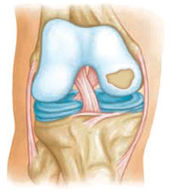
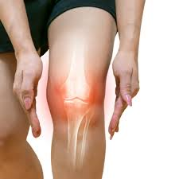
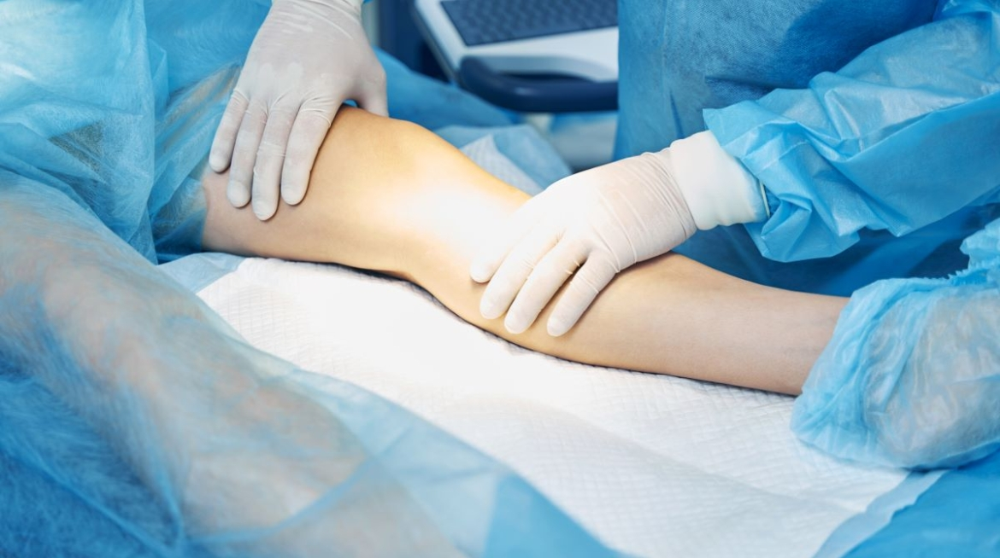

cartilago
El cartílago de la rodilla es un tejido liso y firme que recubre los extremos de los huesos (fémur, tibia y rótula). Su función es actuar como amortiguador y permitir que la articulación se mueva sin fricción. Al no tener vasos sanguíneos, su capacidad de regeneración es muy limitada.

Lesiones comunes del cartílago
Las lesiones del cartílago de la rodilla (también llamadas lesiones osteocondrales) ocurren cuando se altera el tejido liso que recubre la articulación
- Desgaste del cartílago:Ocurre cuando el cartílago se va deteriorando poco a poco por el uso excesivo, la edad o el sobrepeso. Esto hace que los huesos rocen entre sí y produzcan dolor.
- Artrosis:La artrosis es una enfermedad degenerativa donde el cartílago se desgasta progresivamente, causando inflamación y dificultad para mover la rodilla.
- Lesión osteocondral:Son daños causados por golpes fuertes, caídas o accidentes deportivos que afectan el cartílago de manera repentina.

Síntomas
Los síntomas de las lesiones del cartílago pueden incluir:
- Rigidez.
- Dolor al mover la rodilla.
- Crujidos.

Tratamiento
Tratar las lesiones del cartílago puede variar según la gravedad. Las opciones de tratamiento incluyen:
- Control de peso
- Fisioterapia
- Infiltraciones
- Cirugía: en casos graves, como microfracturas o trasplantes de cartílago.